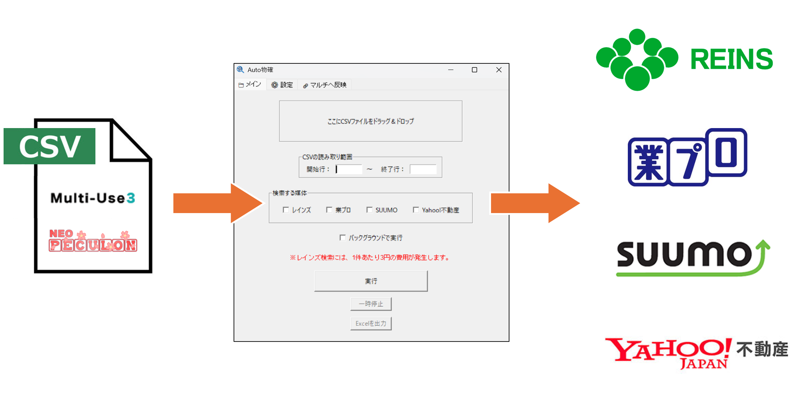
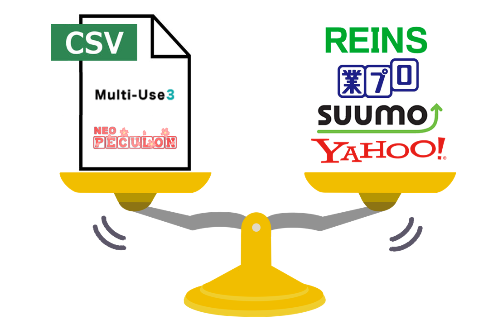
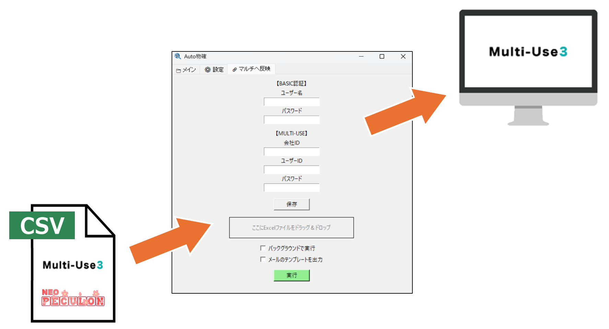
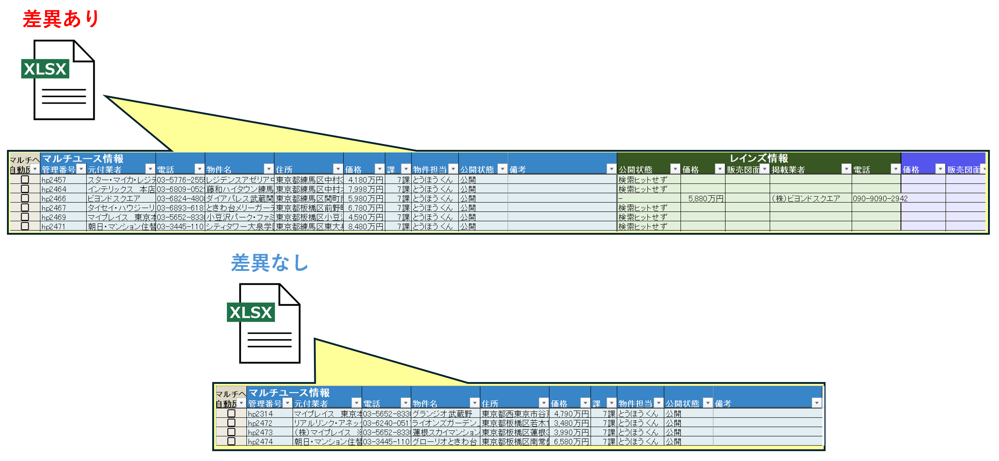
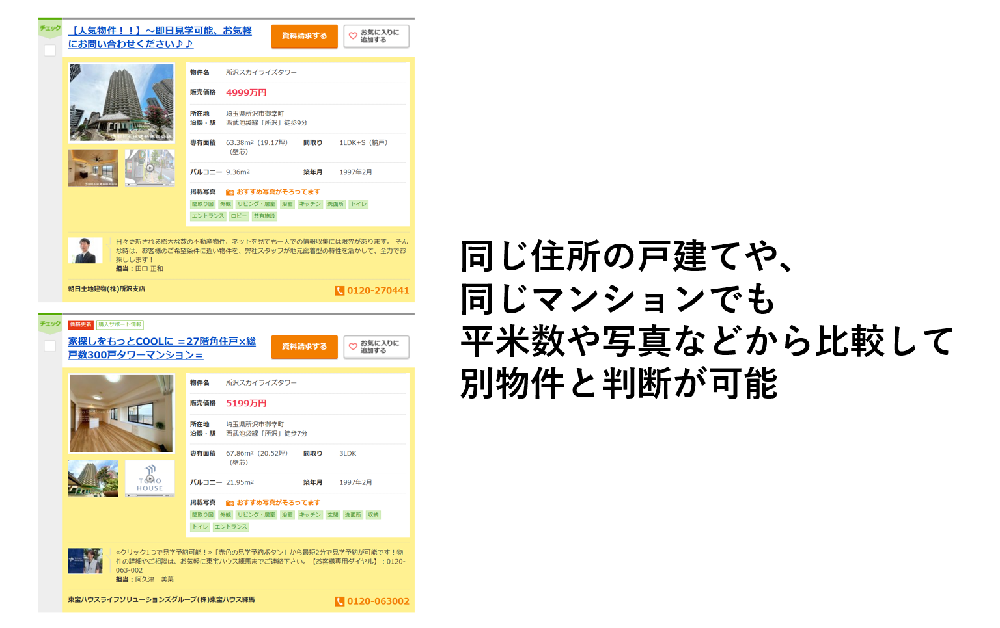
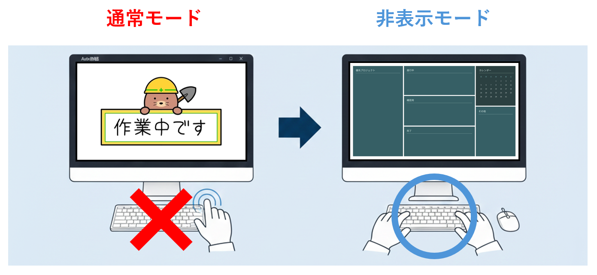

Auto物確 (オートブッカク)

導入効果
⏱️ 作業時間：物件確認から更新までの作業時間を大幅に短縮
🚀 提案スピード：情報の遅延による機会損失を防ぎ、提案精度を向上
📈 運用精度：ヒューマンエラーを排除し、正確な広告情報を維持
開発の背景・概要
不動産広告において、価格変更や公開終了といった最新情報の把握（物件確認）は不可欠ですが、膨大な数の物件を毎日手動でチェックするのは非常に大きな負荷となっていました。
Auto物確は、マルチユースから出力したデータを基に、レインズや各ポータルサイトを自動で巡回・調査するシステムです。
情報の遅延による機会損失を防ぎ、常に最新かつ正確な情報を顧客へ届けることを可能にします。
主な機能
主要メディアの自動巡回・価格調査
レインズ、業プロ、SUUMO、Yahoo!不動産といった主要ポータルサイトをシステムが自動で巡回。 自社の登録情報と現在の掲載情報を比較し、価格の差分や公開終了の有無を瞬時に特定します。

マルチユースへの自動反映 (Multi-Link)
調査結果で判明した「価格差」や「公開状態の変更」を、ボタン一つでマルチユースV3へ直接反映可能です。 調査からデータ更新までを一つのフローで完結させることができます。

差分レポートのExcel出力
調査結果は「差異あり」「差異なし」に自動で仕分けられ、Excel形式で詳細なレポートが出力されます。 どの物件に修正が必要か一目で把握でき、社内の情報共有もスムーズに行えます。

高度な物件特定ロジック
単なる文字一致だけでなく、面積（土地・建物・専有）や所在階、さらには正規化した物件名を用いた独自のマッチングアルゴリズムを搭載。 サイトごとの表記の揺れに左右されない正確な特定を実現しています。

バックグラウンド実行（非表示モード）対応
ブラウザを表示させずに裏側で処理を進めるモードを選択可能です。 システムが調査を行っている間も、他のPC作業の手を止める必要はありません。
